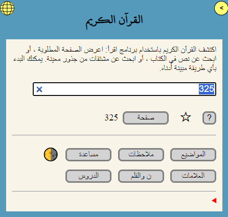
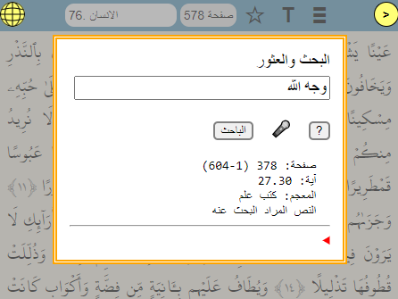
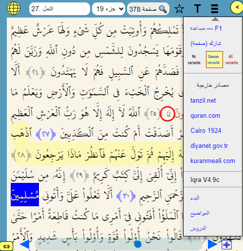
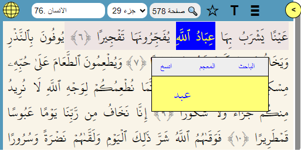
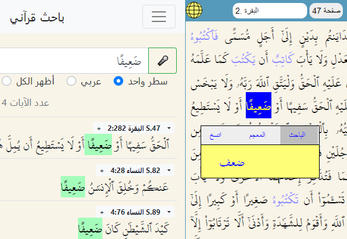
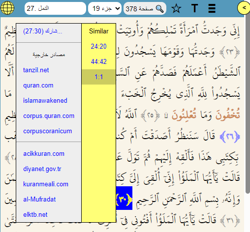

إقرأ هو أداة لقراءة وبحث القرآن، وهو واحد من مئات البرامج المصممة لقراءة كتابنا الكريم. الميزات الأساسية التي تميزه عن البرامج الأخرى هي: تحديد جذر الكلمة في نص القرآن، وعرض جميع الصفحات التي تظهر فيها الكلمة في القرآن على شاشة واحدة، والعمل في بيئة غير متصلة بالإنترنت.
لسهولة الحفظ والتلاوة، تُستخدم صفحات المصحف القياسية في إقرأ. الكلمة التقنية لـ "مصحف" هي "codex"، وهي شكل مكتوب لنص القرآن. "المعجم" هو فهرس يوضح تكرار كل كلمة.
رابط بدء البرنامج:
https://okuyun.org
فيديوهات تعريفية:
https://okuyun.org/video.html
تظهر صفحة البداية بهذا الشكل (نظرة سريعة):

عند فتح المصحف، إذا كانت الشاشة واسعة بما يكفي، تظهر صفحة القرآن والترجمة معًا. إذا لم يكن من الممكن أن يتسع كلاهما معًا، يتم عرض واحد فقط (انظر: اللوحات) لتغيير عرض اللوحة، اسحب الزر الأصفر ذو السهمين. أثناء فتح المصحف، يمكن الانتقال إلى الصفحة التالية أو السابقة، أو تحديد سورة، جزء، آية، أو رقم صفحة آخر.

عند النقر على رقم الصفحة في الأعلى، يظهر مربع حوار للتنقل، مشابه لصفحة البداية. تتم إدارة جميع عمليات البحث عن طريق إدخال المعلومات في المربع الوحيد في هذا الحوار. بناءً على البيانات، يقرر البرنامج نوع البحث أو التنقل المطلوب. في نفس الحوار، يمكن أيضًا البحث عن الكلمات المنطوقة باستخدام الميكروفون. البحث الصوتي متاح للنص العربي فقط.
يمكن أن يتضمن رابط البدء أرقام الصفحات أو الآيات:

في هذه الصورة، تظهر قائمة الصفحة، وتستخدم بشكل أساسي للموارد الخارجية. حرك الزر الأصفر ذو السهم المزدوج لتغيير عرض اللوحة.
الأزرار العلوية اليمنى:
يمكن العثور على جذر ومعنى الكلمات العربية بالنقر بالماوس على سطح المكتب أو النقر على الهاتف المحمول. يتم تمييز الآيات والكلمات الموجودة في لوحة البحث (المعجم أو الباحث) بالألوان في تلك اللوحة. في الشاشات الضيقة، لا تتناسب أعمدة الآية والترجمة معًا؛ يتم استخدام قائمة T (أو التمرير) للتبديل بين الآيات والترجمات. تتناسب الخطوط مع عرض الشاشة، لذا فإن حمل الهاتف بشكل جانبي يوفر رؤية أفضل.

في هذه الصورة، تظهر قائمة السياق بعد تحديد كلمتين.
لقائمة السياق: إذا كان هناك ماوس، انقر بزر الماوس الأيمن؛ وإلا اضغط مطولاً على الكلمة أو المس بإصبعين. يتم نسخ النص المحدد إلى الحافظة أو إرساله إلى وحدات البحث.
يدعم البرنامج ثلاثة أنواع من البحث:
تم تقديم البحث النصي العادي في النص العربي أو في الترجمة التركية-الآنجليزية كمشروع تخرج بواسطة عبد الرحمن رجب (اكتمل في يونيو 2020)

في لوحة المصحف، الجذر "ktb" محدد، ثم تم تحديد كلمة "ضعيفاً" في الصفحة 47. من قائمة الكلمات يمكنك التبديل بسهولة إلى لوحة الباحث لرؤية جميع التكرارات الـ 4. انقر فوق رقم الآية في الباحث للعودة إلى المصحف.
تتيح أيقونة الميكروفون البحث الصوتي (العربية، التركية، الإنجليزية).
تعمل طريقة المعجم بناءً على جذور الكلمات العربية المختارة. تم تصميم هذه الطريقة لأولئك الذين يعرفون لغة القرآن أو يرغبون في تعلمها. كل صندوق من الصناديق الـ 604 الموضحة في الصفحة يتوافق مع صفحة من القرآن. الجذر المبحوث عنه لا يظهر على الإطلاق في الصفحات البيضاء. لون كل صندوق يتناسب مع عدد الكلمات في الصفحة المقابلة. التفاصيل موجودة في الصفحة ذات الصلة
تم تقديم بعض الأمثلة بخصوص تشابه الآيات في هذه الصفحة. هل من الممكن العثور على تشابهات مثل هذه تلقائيًا؟ الجواب نعم؛ مع وحدة التشابه، من الممكن العثور على الآيات التي تحتوي على كلمات متشابهة متعددة:

في صفحة المثال، تم تمييز ثلاث آيات بأرقام زرقاء. على سبيل المثال، للآية 27:30، تظهر ثلاث آيات متشابهة. البسملة التي تظهر في هذه الآية، بالطبع، هي نفسها الآية الأولى من الكتاب. كما هو الحال في المعجم، تعمل وحدة التشابه أيضًا مع جذور الكلمات العربية، لذا فهي تستخدم فقط في النص العربي؛ لا توجد وحدة تشابه للترجمات حتى الآن.
كتطبيق ويب تقدمي (PWA)، تشمل ميزاته ما يلي:
لنلخص إمكانيات البرنامج باستخدام الأمثلة أدناه:
اللوحات – البحث، الترجمة، القرآنالميزة الأكثر وضوحًا للبرنامج هي
تصميم اللوحات الثلاث:

اللوحات (ثلاثة أحرف):
A: الوصول/البحث، T: الترجمة، K: القرآن
عند عرض لوحة البحث، تكون إحدى الصفحات التالية فقط مرئية: البداية، الباحث، المعجم، الموضوعات، الملاحظات، النجوم، الكتاب... (صفحات الكتاب لا تعمل دون اتصال)
إذا كانت الشاشة واسعة بما يكفي، تظهر اللوحات الثلاث في وقت واحد. سيتسع الكمبيوتر المحمول للوحتين، والهاتف للوحة واحدة فقط. في هذه الحالة، يتم استخدام الزر الأصفر أو تمرير الشاشة للتبديل بين اللوحات.

المعجم: الجذر ktb (كاف-تاء-باء) الموضح ومشتقاته المختلفة يظهر 319 مرة عبر 205 صفحات. في الصورة، الصفحة المختارة 59 تحتوي على الجذر 6 مرات؛ الصفحات ذات الألوان الفاتحة تحتوي على حالات أقل... يمكننا قراءة الآيات ذات الصلة بالنقر فوق المربع الأصفر للذهاب إلى صفحة المصحف. (هناك أيضًا قائمة سياق للقراءة في الموارد الخارجية) رابط Corpus في أسفل اليمين يؤدي إلى الصفحة المرجعية التي استخدمناها.
المصحف: في الصفحة المفتوحة 59، تم تمييز 6 كلمات مشتقة من الجذر "ktb" باللون الأزرق. بعد تحديد كلمة في المصحف، يمكنك التبديل إلى طرق بحث المعجم والباحث من قائمة السياق. ستتم إضافة البحث عن الآيات المتشابهة إلى قائمة الآية.

المصحف: في الصفحة المفتوحة 382 تم تحديد تسلسل الحروف "متى هذا". من قائمة السياق، من السهل التبديل إلى لوحة الباحث.
الباحث: تُظهر الصورة الآيات التي يحدث فيها التسلسل "متى هذا". بالنقر على رقم الآية أو النص المظلل، يمكنك العودة إلى المصحف أو التبديل إلى برنامج خارجي من القائمة.
في تلاوة القرآن، يواجه المرء آيات تشبه بعضها البعض. لشرح آية بأخرى، من الضروري الانتقال بسرعة بين الآيات المتشابهة ورؤيتها جميعًا معًا.
* إظهار جذور الكلمات العربية
* العمل بشكل مستقل عن الإنترنت
* تنزيل الإصدارات الجديدة تلقائيًا
فهرس يوضح في أي الآيات تقع كل كلمة
corpus.quran.com (GNU License is included below)
كل صفحة عبارة عن صندوق، كل جزء عبارة عن صف
اخترنا مصحف المدينة لثلاثة أسباب:
* علامات التجويد تجعل القراءة أسهل
* أسلوب الكتابة الدولي الأكثر شيوعًا
* متوافق مع القراءات المختلفة
(C) 1992, 2012, 2019 by M Akif Eyler
تم النسخ باستخدام GNU License